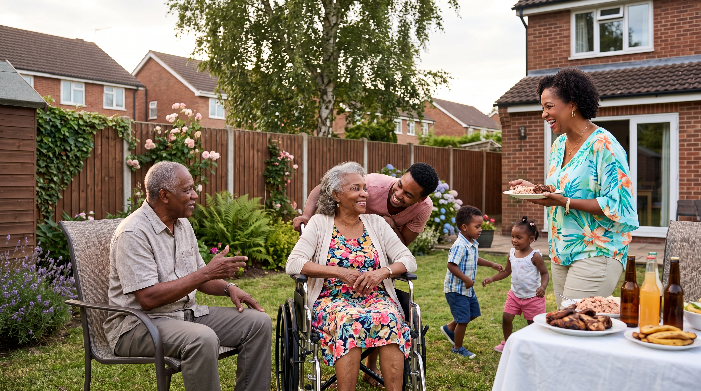

Our Main Objective: To support UKOT citizens, and authorities in navigating the United Kingdom National Health Service by establishing and operating a multi‑stakeholder social development partnership model. This model strengthens coordination, expands community capacity, and delivers measurable improvements in the lived experiences of citizens across housing, health, wellbeing, and socio‑economic stability.
A dedicated Community Interest Company (CIC) with focus on improving the lived experiences of UK Overseas Territories (UKOT) citizens who face significant challenges when accessing healthcare and other welfare support services in the United Kingdom.
Operating at the intersection of health, social care, community development, and welfare support, Alliouagana Arc – CIC delivers a coordinated suite of non‑clinical services designed to reduce vulnerability, strengthen resilience, and improve wellbeing for individuals and families navigating complex medical‑referral pathways.
We will work collaboratively with NHS teams, UKOT governments, charities, and community groups to build reliable support pathways that alleviate socio‑economic hardship, reduce stress and anxiety, and strengthen patient safety nets.

British citizens on the NHS medical‑referral Quota system from the UKOT of Montserrat face a unique combination of challenges that significantly affect their ability to access care, maintain stability, and achieve positive health outcomes.
Limited eligibility for UK health and welfare support, combined with insufficient understanding of policies, leaves families uncertain about their entitlements. Many households also experience food insecurity and financial strain.
Families struggle with transportation, navigating the NHS digital‑first healthcare system, unfamiliar norms, inability to source familiar foods, and communication challenges.
A lack of coordinated non‑clinical support across NHS teams, UKOT governments, and community organisations leaves families without a reliable, culturally responsive safety net.
UKOT medical‑referral patients and their families experience improved wellbeing, stability, and recovery through strengthened non‑clinical support, community networks, and policy advocacy.
Identifying affordable accommodation options and providing additional orientation support, such as airport pick‑ups, transport assistance, and guided shopping.
Helping patients become confident in the use of online tools to access digital portals for health information, register with a local GP, order repeat prescriptions, and book appointments.
Building cross‑sector partnerships with NHS teams, UKOT governments, charities, and community groups to fill critical gaps in non‑clinical care and ensure consistent, culturally sensitive support.
Distributing welfare‑assistance grants to eligible vulnerable UKOT citizens to provide immediate relief from socio‑economic hardship and alleviate crisis situations.
Hosting health‑education events, focus groups, and community discussions to increase awareness of relevant health, welfare, and immigration policies.
Working with others to source affordable housing options giving patients and their chaperone the opportunity to stay in close connection with each other and remain in proximity to the hospital.
"The name Alliouagana ARC reflects our promise: rising from the prickly bush to follow the Light, shaping a narrative of resilience and transformation grounded in lived experiences of change."
All firmly rooted in reliable care that enhances the wellbeing and dignity for those we serve.